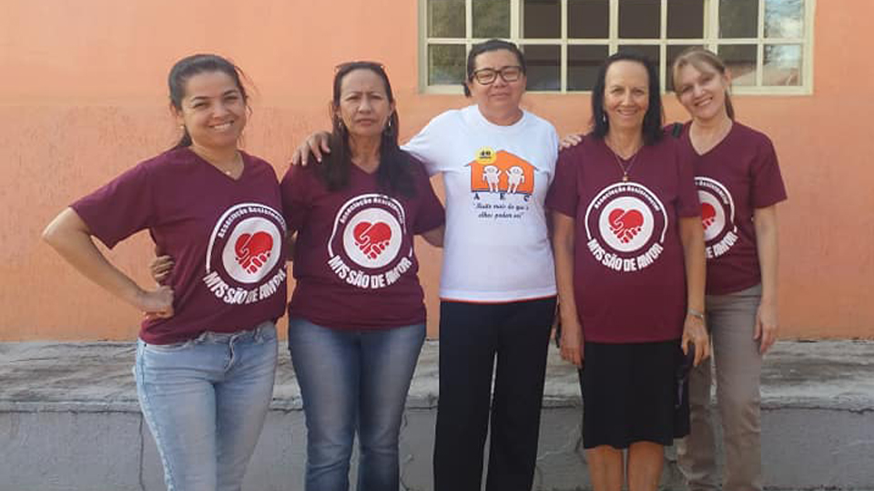
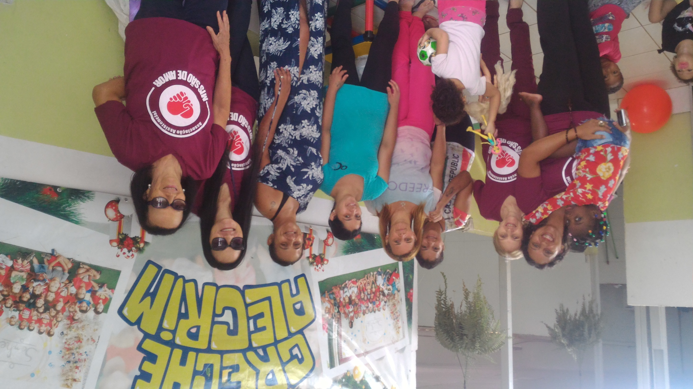
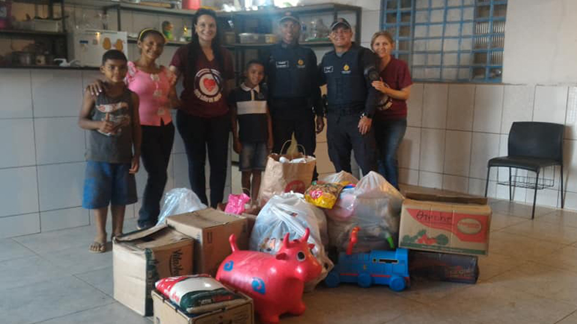
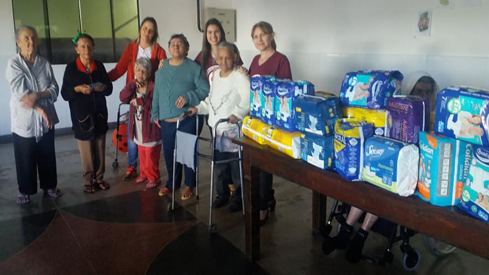
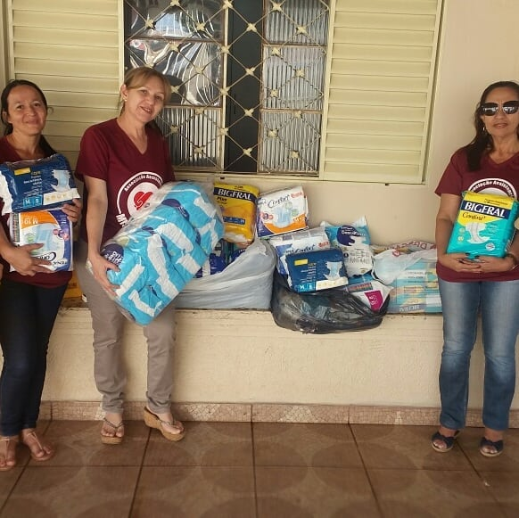
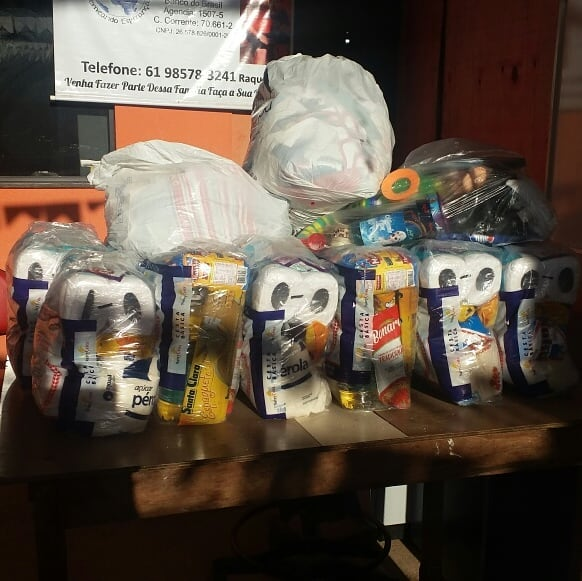
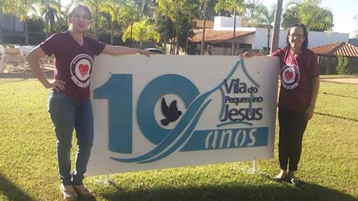
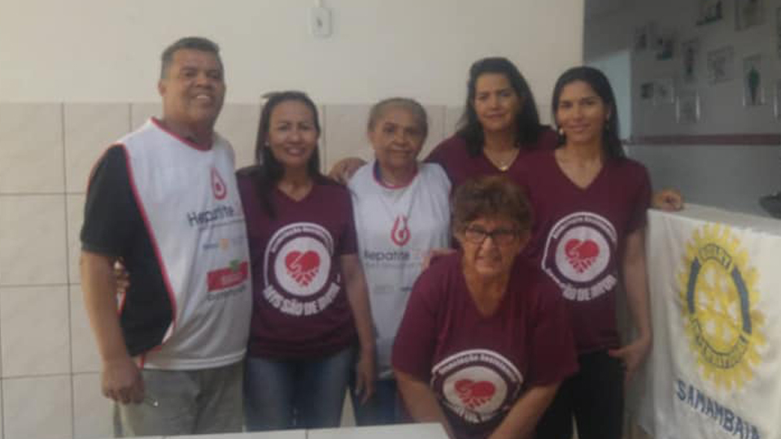

Abrigo Esperança dos Excepcionais
A Casa de Apoio dos Excepcionais da Ceilândia, tem 50 acolhidos que precisam da nossa ajuda com
leite, máscaras cirúrgica tripla proteção, luvas de látex para procedimento, capotes descartáveis,
toucas descartáveis e álcool 70%.
Colabore conosco!
Deposite na conta da Missão ou entregue no local da arrecadação.

Creche Alecrim
A Creche Alecrim situada na Estrutural atende 86 crianças
carentes de 02 a 04 anos de idade.
Estamos arrecadando:
Alimentos, fraldas, roupas, materiais de limpeza e de higiene.
Colabore com a nossa campanha em prol das crianças carentes.
Buscamos a sua doação!
Qualquer doação será bem vinda.

Creche Tia Táta
A Creche Tia Tatá localizada no Bairro Santa Luzia na Estrutural/DF,
desenvolve um lindo trabalho.
Tem aulas de alfabetização de adulto, acolhe crianças carentes eserve sopa todas as sextas feiras.
Ela precisa da nossa ajuda para dá continuidade ao seu trabalho.
Estamos arrecadando alimentos para ajudá-la, qualquer doação será bem vinda.

Lar Santa Rita
Estamos arrecadando FRALDAS GERIÁTRICAS para o Lar Santa Rita em Presidente Olegário-MG.
O Lar tem 46 idosos.
Precisamos da sua ajuda

Casa dos Excepcionais
Asa Norte

Semeando Esperança
Estrutural

Pequenino Jesus
Lago Sul

Casa do Excepcionais
Ceilandia